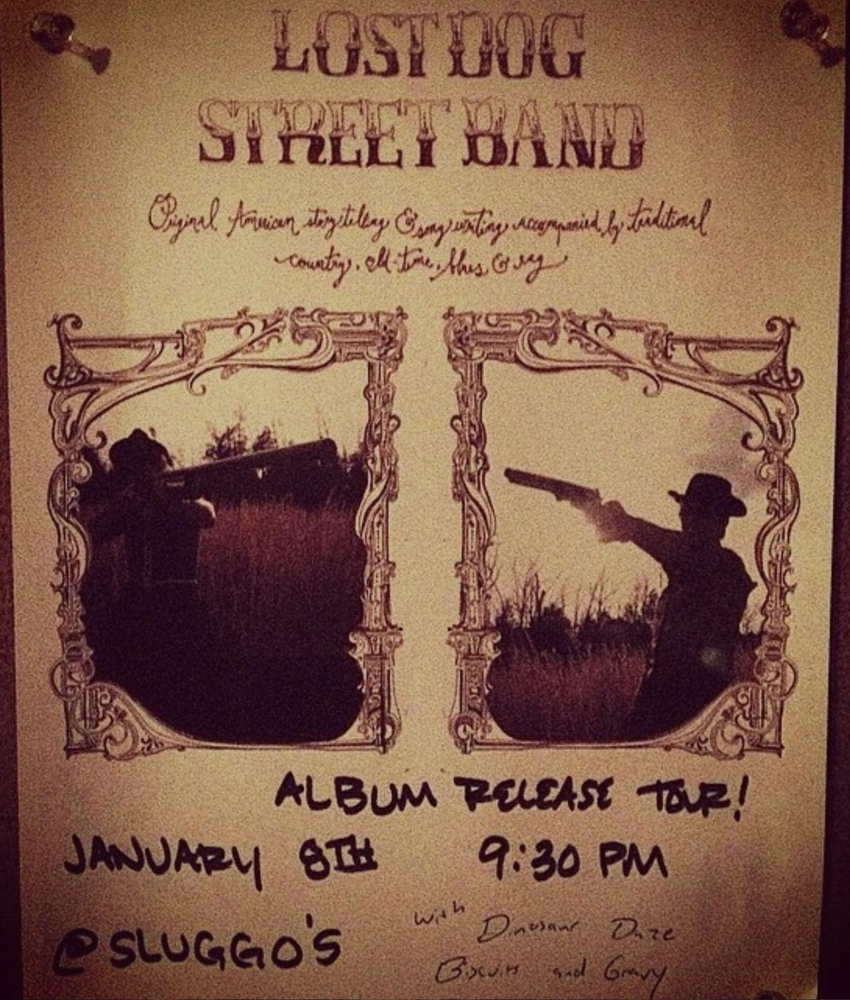

THU JAN 8from the archive
Lost Dog Street Band, Dinosaur Daze, Biscuits & Gravy
9:30pm
Lost Dog Street Band, Dinosaur Daze, Biscuits and Gravy. Album release tour. Sluggo's, January 8.

Lost Dog Street Band, Dinosaur Daze, Biscuits and Gravy. Album release tour. Sluggo's, January 8.